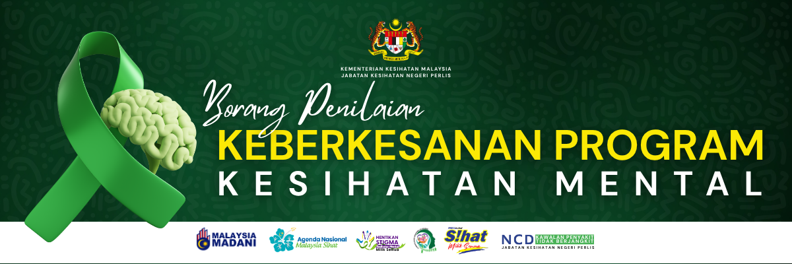
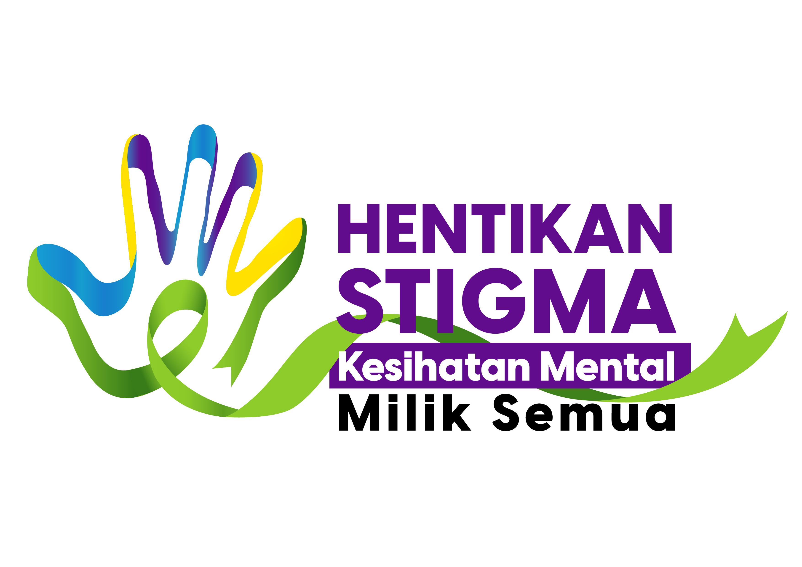

Kempen Hentikan Stigma: Kesihatan Mental Milik Semua
Selamat datang ke Borang Penilaian Keberkesanan Program. Borang ini disediakan bagi menilai maklum balas serta impak penganjuran aktiviti kesedaran kesihatan mental di peringkat komuniti.
Segala maklumat yang diberikan di dalam borang ini adalah SULIT dan RAHSIA. Data yang dikumpul hanya akan digunakan untuk tujuan analisis, pelaporan, dan penambahbaikan mutu perkhidmatan KKM pada masa hadapan sahaja.
Maklumat program dikesan secara automatik berdasarkan tarikh aktiviti.
Sila isi maklumat latar belakang anda sebelum memulakan soalan penilaian.

Adakah pameran, aktiviti & penyampaian maklumat menarik minat anda?
Adakah mesej disampaikan dengan mudah difahami?
Adakah topik dan pengisian aktiviti ini relevan dengan keperluan diri anda dan masyarakat?
Adakah penganjuran kempen ini mendorong anda untuk mengamalkan penjagaan kesihatan mental yang baik?
Kementerian Kesihatan Malaysia (KKM) merakamkan setinggi-tinggi penghargaan atas kesudian anda mengisinya. Maklum balas anda adalah perintis utama komuniti bebas stigma.